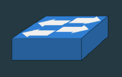
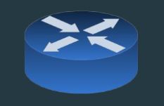
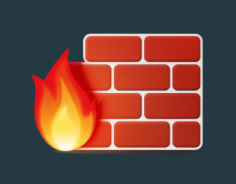

Computer networks
A computer network refers to the connection of two or more computers through software and hardware, facilitating communication between them. Each connected device, whether a computer, peripheral (e.g., printer or game console), or network device (e.g., router), is termed a node.
Networks provide various advantages, including:
- Sharing an Internet connection
- Sharing printers and other peripherals
- Sharing files
- Common communications
Network performance
Network performance is usually measured as bandwidth and throughput, which in turn are measured in bits per second (bps)
Data transfer rate
Also known as bandwidth, data transfer rate represents the maximum speed of data transmission between network nodes.
Throughput
Throughput refers to the actual speed achieved and is often less than the bandwidth.
Network communication mechanics
Packets
A computer network operates similarly to a complex mail system, transporting messages as packets of bits and bytes.
Address
Each node requires a unique address and must adhere to communication rules.
Network infrastructure
Packets traverse the network infrastructure from source to destination.
Network components
A network’s complexity can range from a simple connection between two computers to a global collection of interconnected networks. Two broad categories of physical components in a network are transmission media and devices, including infrastructure and end devices.
Transmission media
Communication across a network from source to destination occurs through media such as metallic wires (e.g., copper), glass (fiber optic cables), and wireless transmission.
Electrical media
Most common and least expensive
Twisted pair
Made up of copper wires twisted around each other and surrounded by a plastic jacket.
Several grades of twisted pairs are available, including:
- Cat 5e (up to 1 Gbps)
- Cat 6 and Cat 6a (up to 10 Gbps)
Coaxial cables
Consists of a single copper wire surrounded by layers of plastic (hence “coaxial”)
Coaxial cables are commonly found on TVs, cable broadband connections, and other networks
Optical fiber
Contains strands of light-conducting filaments made of plastic or glass with a tough plastic coating for protection from physical damage. Although expensive and fragile, and difficult to install, optical fibers offer high bandwidth and long-distance transmission capabilities.
Wireless media
Conveys signals using radio frequency with the use of an antenna that enables greater mobility, with the downside of having lower bandwidth than wired connections.
Wireless media is easily affected by interference from other wireless and radio devices. Its throughput is also affected by distance and physical barriers
End devices
Every computer connected to a network is an end device or host; i.e., it is where a message originates from or where a message is received. End devices include servers and clients
Servers
Servers provide services and information to end devices on the network. Examples include email servers, web servers, or file servers.
Network printers
Network printers provide centralized printing that can be accessed by different networked users
Network-attached storage (NAS)
NAS provides centralized and dedicated file storage on the network
Network interface card (NIC)
An NIC or network port enables an end device to connect to a network.
Clients
Clients send requests to the servers to retrieve information such as a web page from a web server or to ask for a task to be performed such as sending an email.
Network Infrastructure Devices
Infrastructure devices interconnect end devices, manage data flow, and include switches, wireless access points, routers, and firewalls.
Switches
 Switches connect devices together using cables to form a network
Wireless access points (WAP)
 Wireless access points connect wireless devices together to form a network
Wireless access points connect wireless devices together to form a network
Routers
 Routers connect networks together and calculate the best paths to move (route, hence “router”) data between them
Firewalls
 Firewalls perform filtering in a network to block unwanted data
Communication rules
Communication requires a set of rules, such as:
- An identified sender and receiver
- Using a common language
- Method of communication (e.g., mail, face to face, messaging)
Network communication rules
When communicating over a network, devices follow a set of standards and protocols to ensure compatibility and orderly communications. These rules include:
- How messages should be packaged
- How addresses should be formatted
- How fast messages can be sent
Some popular standards include:
- Ethernet (for wired devices)
- 802.11 Wireless Ethernet (for wireless devices)
- Internet Protocol (IP)
Addressing
Devices use MAC and IP addresses for identification within a network, requiring unique addresses for proper communication (i.e., to receive packets). To communicate on a network, a device must the same network number as the network it is connected to, and must have a unique host number within that network. To communicate with destinations outside its network, a device must additionally be set with a default gateway
MAC address
A MAC address is a permanent address that uniquely identifies a device whichever network it may join (similar to your name)
IP address
An IP address is a temporary address that uniquely identifies a device within a network (similar to your student ID). It is paired with a subnet mask to differentiate the network number and its host number within the network
Types of Networks
Common network types include Local Area Networks (LANs), Wireless LANs (WLANs), and Wide Area Networks (WANs).
Local area networks
These networks span small geographic areas, providing high-speed bandwidth within homes, schools, or offices. They are usually owned or managed by a single organization or individual and provide high speed bandwidth to end devices and infrastructure devices within the network.
WANs
Interconnecting LANs over larger regions, WANs offer slower speed links between LANs. They are usually owned and managed by multiple service providers.
The Internet
The Internet is a worldwide collection of interconnected LANs and WANs. LANs are connected to each other using WANs. WANs are then connected to each other using copper wires, fiber optic cables, and wireless transmissions. The Internet is not owned by any individual or group; however, global organizations and consortiums help maintain its structure
Connecting to the Internet
Businesses and individuals connect to the Internet through dedicated connections or services from Internet service providers (ISPs). ISPs offer broadband Internet connection services, allowing users to access the Internet.
Cable
Transmission Medium: Coaxial cables, similar to cable TV wire Characteristics: Cable connections are shared, so speed can drop during high-usage periods Speeds: Average: 10 Mbps, Maximum: 30 Mbps
DSL
Transmission Medium: Copper wire phone line Characteristics: Speed drops as distance from the main signal source increases Speeds: Average: 3.7 Mbps, Maximum: 35 Mbps
Fiber
Transmission Medium: Optical fiber Characteristics: Transmits data via light signals, which do not degrade over long distances Speeds: Average: 50 Mbps, Maximum: 500 Mbps
Mobile (3G/4G/5G)
Transmission Medium: Radio frequency - uses the same cellular network that cell phones use Characteristics: Speed drops as users and distance from cell towers increase. Also affected by physical obstacles Speeds:
- 3G: Average: 3 Mbps
- 4G: Average: 20 Mbps
- 5G: Average: 140 Mbps